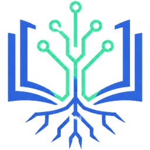

词根词缀分析器
输入一个英文单词，拆出它的前缀 / 词根 / 后缀
分析
发音
内置
Kokoro
美音·女·Heart
美音·女·Bella
美音·女·Nicole
美音·女·Aoede
美音·女·Kore
美音·男·Adam
美音·男·Michael
英音·女·Emma
英音·女·Isabella
英音·男·George
慢
正常
稍快
快
A·小
A·中
A·大
≡·紧凑
≡·标准
≡·宽松
🌗 自动
中
查询
词根
词频
例句
收藏
↑
← 返回
详细
✕ 关闭
搜索例句
正在加载…